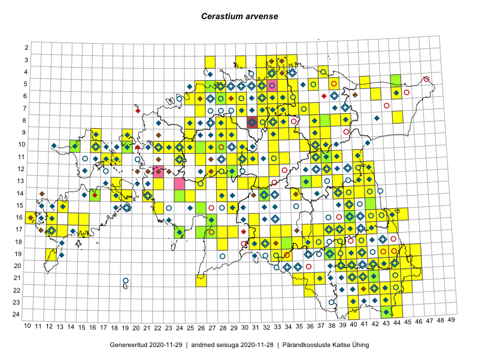

Cerastium arvense
Uuendatud: 2016-12-01
Kaardile koondatud taksonid: Cerastium arvense L.

Kaart põhineb 366 kirjel, neist vaatlusi 365 ja eksemplare 1.
Kuvatud viited 20 esimesele andmebaasikirjele, ülejäänud PlutoFis
- Malle Leht: 2015-05-22: : ala
- Tiit Hallikma, Toomas Kukk, Indrek Tammekänd: 2015-06-09: 12-28: ala
- Toomas Kukk: 2015-06-23T14:30Z: 21-45: ala
- Toomas Kukk: 2015-06-23: 21-45: GPS punkt
- Toomas Kukk, Tiit Hallikma: 2015-06-09: 12-28: GPS punkt
- Rein Kalamees: 2015-06-05: 05-32: ala
- Peedu Saar, Liina Oja: 2015-05-20: 18-28: ala
- Peedu Saar, Liina Oja: 2015-05-20: 18-28: GPS punkt
- Peedu Saar, Toomas Kukk: 2015-05-28: 11-17: ala
- Peedu Saar, Toomas Kukk: 2015-05-27: 09-16: ala
- Tiit Hallikma, Indrek Tammekänd, Toomas Kukk: 2015-06-09: 12-28: GPS punkt
- Tiit Hallikma, Indrek Tammekänd, Toomas Kukk: 2015-06-09: 12-29: ala
- Tiit Hallikma, Indrek Tammekänd, Toomas Kukk: 2015-06-09: 12-29: GPS punkt
- Peedu Saar, Liina Oja: 2015-06-09: 17-27: GPS punkt
- Peedu Saar, Liina Oja: 2015-06-09: 17-28: GPS punkt
- Peedu Saar, Thea Kull: 2015-06-19: 17-40: GPS punkt
- Peedu Saar, Thea Kull: 2015-06-19: 17-40: GPS punkt
- Peedu Saar, Thea Kull: 2015-06-17: 17-39: GPS punkt
- Peedu Saar, Ott Luuk: 2015-06-21: 14-41: ala
- Peedu Saar, Ott Luuk: 2015-06-21: 14-42: ala